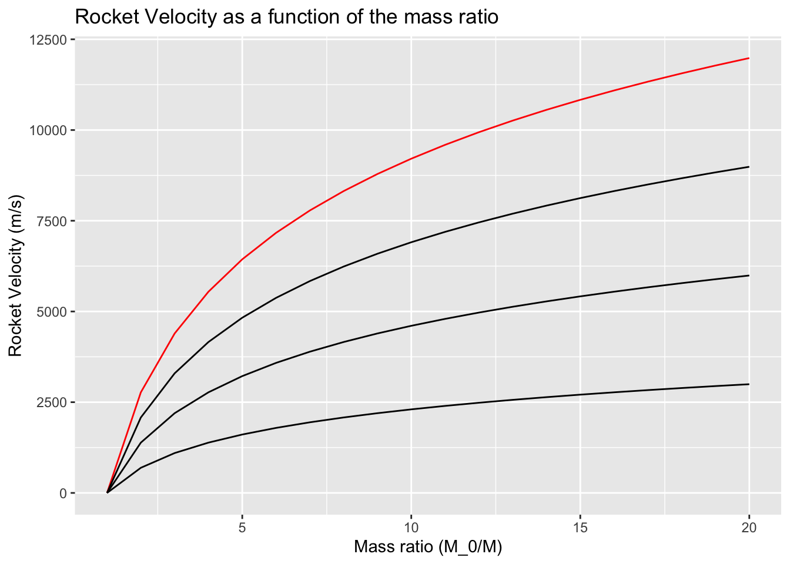
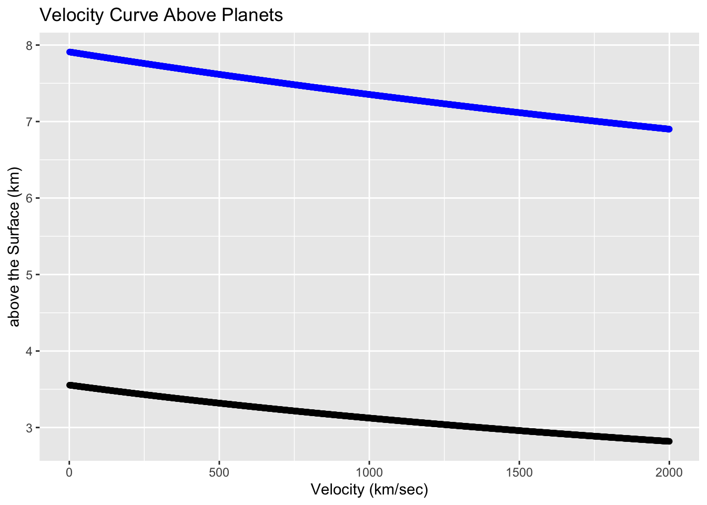

Accelerating force
\[ F=mv_e \] thrust of the rocket is expressed in terms of the mass flow rate m and the efficient exhaust velocity \(v_e\)
\[ V = V_e\log_e\frac{M_0}{M} \] \(M_0\) - mass of the rocket at ignition \(M\) - Current mass of the rocket
mass ratio \[ R = \frac{M_0}{M} \]
RocketEquationGraph <- data.frame(Mass.Ratio = c(seq(1:20)))
RocketEquationGraph <- RocketEquationGraph %>%
mutate( M4000 = RocketEquation(Mass.Ratio, 4000),M3000 = RocketEquation(Mass.Ratio, 3000),M2000 = RocketEquation(Mass.Ratio, 2000), M1000 = RocketEquation(Mass.Ratio, 1000) )
RocketEquationGraph## Mass.Ratio M4000 M3000 M2000 M1000
## 1 1 0.000 0.000 0.000 0.0000
## 2 2 2772.589 2079.442 1386.294 693.1472
## 3 3 4394.449 3295.837 2197.225 1098.6123
## 4 4 5545.177 4158.883 2772.589 1386.2944
## 5 5 6437.752 4828.314 3218.876 1609.4379
## 6 6 7167.038 5375.278 3583.519 1791.7595
## 7 7 7783.641 5837.730 3891.820 1945.9101
## 8 8 8317.766 6238.325 4158.883 2079.4415
## 9 9 8788.898 6591.674 4394.449 2197.2246
## 10 10 9210.340 6907.755 4605.170 2302.5851
## 11 11 9591.581 7193.686 4795.791 2397.8953
## 12 12 9939.627 7454.720 4969.813 2484.9066
## 13 13 10259.797 7694.848 5129.899 2564.9494
## 14 14 10556.229 7917.172 5278.115 2639.0573
## 15 15 10832.201 8124.151 5416.100 2708.0502
## 16 16 11090.355 8317.766 5545.177 2772.5887
## 17 17 11332.853 8499.640 5666.427 2833.2133
## 18 18 11561.487 8671.115 5780.744 2890.3718
## 19 19 11777.756 8833.317 5888.878 2944.4390
## 20 20 11982.929 8987.197 5991.465 2995.7323g <- RocketEquationGraph %>% ggplot() +
geom_line(aes(Mass.Ratio, M4000), color = "red")+
geom_line(aes(Mass.Ratio, M3000)) +
geom_line(aes(Mass.Ratio, M2000))+
geom_line(aes(Mass.Ratio, M1000)) +
labs(title = "Rocket Velocity as a function of the mass ratio",
x = "Mass ratio (M_0/M)",
y = "Rocket Velocity (m/s)")
g
The rocket equation shows that the final speed depends upon only two numbers; the final mass ratio, and the exhaust velocity. It does not depend on the thrust rather surprisingly, or the size of the rocket engine, or the time the rocket burns, or any other parameter.
Much of the effort in rocket design goes into increasing the exhaust velocity.
Gunpowder, and the range of propellants of the 19th century produced an exhaust velocity of around 2000 \(ms^{-1}\) while today we reach around 4500 \(ms^{-1}\)
The point at which the rocket’s speed exceeds the exhaust speed is when the mass ratio becomes equal to e, or 2.718, the base of natural logarithms.
1.3.1 Orbits
\[ \frac{1}{r} = \frac{GM_{\bigoplus}M^{2}}{h^{2}}1+\epsilon\cos\theta \]
- \(G\) gravitational constant (\(6.670\times10^{-11}Nm^2kg^2\))
- \(M_\bigoplus\) mass of the earth
- \(h\) constant angular momentum
- \(\epsilon\) - eccentricity of the orbit
Eccentricity defines the same of the orbit. For an ellipse \(\epsilon\) is the ratio of the distance between the foci, to the length of the major axis. However in order to understand how the orbit varies with the initial velocity of the spacecraft, the angular momentum and the eccentricity have to be expressed in terms of useful parameters.
\[ h = MrV \] \[ \epsilon = \frac{h^{2}}{GM_{\bigoplus}M^{2}r_{0}}-1 \]
The shape of the orbit depends only on the initial velocity and the distance from the center of the Earth.
A circular orbit with eccentricity of zero An elliptical orbit of eccentricity 0.65 A parabolic orbit of eccentricity 1.0
So to see this in practical terms; we express the eccentricity in erms of the initial velocity and height of the spacecraft
\[ \epsilon = \frac{r_{0}V_{0}^{2}}{GM_{\bigoplus}}-1 \] We can see that if the ratio when \(r_0V_0^2 = GM_{\bigoplus}\) the \(\epsilon\) becomes 0 and the orbit is circular.
Or we can substitute zero in the orbit equation: the \(\cos\theta\) term goes to zero and the radius is independent of the angle; that is constant. Thus the orbit is circular. Since the condition for a circular orbit is that \(r_0V_0^2 = GM_{\bigoplus}\), it is easy to calculate the initial velocity, given the distance from the center of the earth.
\[ V_0 = \sqrt{\frac{GM_{\bigoplus}}{r_0}} \]
The mass of the Earth is \(5.975\times10^{24}kg\) and the mean radius is 6,371 km. Therefore an initial radius of 500 km above the Earth’s surface, the initial velocity is 7.6\(km s^{-1}\).
Now this doesn’t give us the velocity to get into space, but it is the velocity to stay there.
As the velocity given to the spacecraft increases, the eccentricity of the elliptical orbit becomes greater, and the apogee moves farther out.
- 6.670 \(Nm^{2}kg^{2}\)
- 5.975 kg
- 63
G <- 6.670*10^-11
eMass <- 5.975*10^24
initialVelocity <-function(r)
{
sqrt((398600.4415)/(6371+r))
}
marsInitialVelocity <- function(r)
{
sqrt((42828.37)/(3389.5+r))
}
fx <- data.frame(miles = 1:2000)
fx <- fx %>% mutate(v.earth = initialVelocity(miles), v.mars = marsInitialVelocity(miles))
g <- fx %>% ggplot() +
geom_point(aes(miles, v.earth),color = "blue") +
geom_point(aes(miles,v.mars)) +
labs(title = "Velocity Curve Above Planets",
x = "Velocity (km/sec)",
y = "above the Surface (km)")
g
Elliptical transfer orbits
\[ V_0=\sqrt{\frac{2GM_\bigoplus}{r_0}} \]